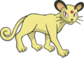
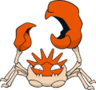
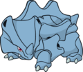
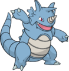
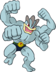
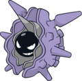
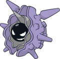
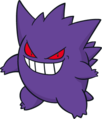
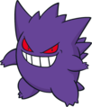

Nome: Giovanni/Agatha
Insígnia: Terra
Cidade: Viridian
Biografia:
Aos olhos do mundo, Giovanni é um dos homens mais ricos do planeta, que ajuda no treinamento de jovens aspirantes a mestres Pokémon. Na verdade, seguindo os passos de sua mãe, ele é o mestre da Equipe Rocket. Seus membros que trazem mais problemas são Jessie e James! Teve a ambição de tentar controlar Mewtwo, mas ele não consegue.
Por serem muito poucos aqueles que conseguem as sete insígnias iniciais, o ginásio de Viridian – cujo antigo líder desapareceu misteriosamente permanece a maior parte do tempo de portas fechadas. São raros aqueles que venceram esse temível líder de ginásio.
Depois de um tempo, quando o ginásio tornou a fechar porque Giovanni foi para Johto para tentar uma busca por Mewtwo, Agatha, que saiu da antiga formação de membros da Elite dos Quatro de Kanto, assumiu o posto de líder desse ginásio. Voltando de Hoenn, Ash encontra Agatha e perde facilmente para ela. Giovanni ficou arrasado por várias tentativas frustadas e sumiu do mapa. Só os membros da equipe Rocket podem saber o que aconteceu com ele e onde ele pode estar agora.
Pokémon de Giovanni:





 

Pokémon de Agatha:
 
